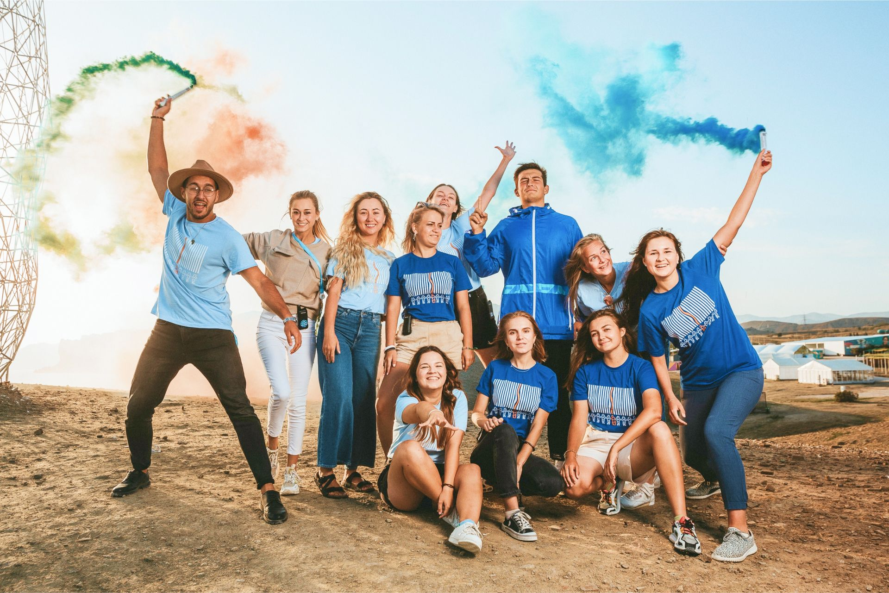

г. Судак, бухта Капсель
Арт-кластер
«Таврида»

Об арт-кластере
Арт-кластер «Таврида» – это первый в России центр культуры и искусств, который объединяет творческие сообщества в рамках одной культурно-образовательной экосистемы и предоставляет широкий спектр возможностей в сфере креативных индустрий для талантливой молодежи
НАШИ преуимущества
Современные
образовательные
форматы
образовательные
форматы
Лаборатория
прикладного
искусства
прикладного
искусства
Топовые эксперты в
области креативных
индустрий
области креативных
индустрий
Цифровые
технологии в
культуре и искусстве
технологии в
культуре и искусстве
Финансовая
поддержка
творческих проектов
поддержка
творческих проектов
Продюсерское сопровождение талантливых участников
Рекрутинг творческих профессий
Нетворкинг
НАШИ проекты
Образовательные
антишколы
антишколы

Онлайн-
конференция
«ARTtalk»
конференция
«ARTtalk»

Арт-парк
«Таврида»
«Таврида»

Кастинг-
платформа
«Таврида.АРТ»
платформа
«Таврида.АРТ»

Центр
практики
«Таврида»
практики
«Таврида»

Грантовый
конкурс
«Таврида»
конкурс
«Таврида»

Фестиваль фестивалей
«Таврида.АРТ»
«Таврида.АРТ»

Блог
о креативных
индустриях
о креативных
индустриях

Образовательный центр
«Арт-резиденция
«Таврида»
«Арт-резиденция
«Таврида»

НАШИ достижения
50 000
участников
всех проектов
всех проектов
3000
Спикеров
образовательных
программ
образовательных
программ
78
новых
резидентов
арт-кластера
резидентов
арт-кластера
109
кастингов,
питчингов
и отборов
питчингов
и отборов
45,5
миллионов
просмотров
прямых
эфиров
просмотров
прямых
эфиров
350 885 300
рублей грантовой поддержки
6
лет вклада в развитие
творческих сообществ
творческих сообществ
НАШИ резиденты

Анастасия
Прудаева
Прудаева
начинающий художник
Анастасия
Прудаева
Прудаева
начинающий художник
Для меня «Таврида» — это точка отсчета становления современного искусства на Ямале. Благодаря грантовому конкурсу мой проект MADEI помогает художникам из города Тарко-Сале продемонстрировать свой талант и способствует развитию культурного досуга в городе.

Владислав
Королёв
Королёв
начинающий исполнитель
Владислав
Королёв
Королёв
начинающий исполнитель
В этом году арт-кластер «Таврида» запустил кастинг-платформу, благодаря которой я попал в 10-ку финалистов конкурса ArtMasters и получил возможность снять клип на собственную песню Take Me Home. Для кого-то это может показаться чем-то нереальным, но именно так, украдкой, «Таврида» исполняет мечты.

Илья
Аноприев
Аноприев
начинающий исполнитель
Илья
Аноприев
Аноприев
начинающий исполнитель
«Таврида» исполнила мою детскую мечту ‒ с ранних лет я слушал Леонида Агутина, одной из первых композиций моего сценического дебюта была песня «На сиреневой луне», и волею случая на фестивале в этом году именно ее мне посчастливилось спеть дуэтом с известным артистом.

Радмира и Софья
Мантулины
Мантулины
начинающие исполнительницы
Радмира и Софья
Мантулины
Мантулины
начинающие исполнительницы
«Таврида» растет, а вместе с ней и мы. Здесь у нас есть возможность посещать интересные мастер-классы и знакомиться с известными артистами ‒ мы стараемся ее не упускать.

Александр
Лазухин
Лазухин
начинающий писатель
Александр
Лазухин
Лазухин
начинающий писатель
Я стал обладателем гранта на съемки собственного интернет-шоу под названием «Парень, который читает стихи» с участием звезд отечественного шоу-бизнеса, и это не единственное, что дал мне арт-кластер «Таврида».

Вадим
Чмутин
Чмутин
солист группы «НЕВЗРОСЛЕЙ»
Вадим
Чмутин
Чмутин
солист группы «НЕВЗРОСЛЕЙ»
«Таврида» вдохновила на написание новой песни «Не забывай», которая стала лучшей на старте нашей карьеры. «Таврида» подарила нам веру в себя, открыла новую аудиторию и помогла обрести вдохновение. Если кто-то спросит, стоит ли регистрироваться на форум или фестиваль, то мы ответим, что точно стоит.

Ирина
Тарасова
Тарасова
начинающая исполнительница
Ирина
Тарасова
Тарасова
начинающая исполнительница
«Таврида» в первую нашу встречу подарила мне глоток воздуха ‒ я не понимала, куда я хочу нести свою музыку и кому нужны песни на английском. Все было очень абстрактно в моей голове. Но на форуме я обрела своих слушателей и получила менторскую поддержку. Появилась цель становиться с каждым днем все лучше и лучше.
Наша история

2015 год
«Таврида» получила статус Всероссийского молодежного образовательного форума

2016 год
Президент РФ Владимир Путин впервые посетил Всероссийский молодежный образовательный форум «Таврида»

2017 год
Количество тематических направлений выросло, а участниками форума впервые стали свыше 3000 молодых деятелей культуры и искусств

2018 год
Первый заместитель Руководителя Администрации Президента РФ Сергей Кириенко предложил перевести «Тавриду» на круглогодичный формат работы и создать для этого новую площадку в Крыму

2019 год
Проект расширился до формата арт-кластера, включил в себя традиционный форум, а также новый фестиваль творческих сообществ «Таврида ‒ АРТ» и переехал в бухту Капсель под Судаком

2020 год
На фестивале была запущена первая в России масштабная кастинг-платформа «Таврида ‒ АРТ», и принято решение о запуске региональной сети арт-резиденций в России

2020 год
«Таврида» впервые выходит за пределы полуострова Крым и открывает свои двери для молодых творцов в Москве на фестивале «Таврида АРТ MOSCOW»

2020 год
В рамках фестиваля «Таврида АРТ MOSCOW» впервые вручена премия-признание «Легенды Тавриды», ее обладателями стали Юрий Башмет, Никита Михалков, Владимир Машков и Олег Табаков (посмертно)
Известные люди о нас

Конечно, есть и другие проекты, где можно выступить с артистами, другие фестивали, где ты встречаешься с единомышленниками, но именно «Таврида ‒ АРТ» это все объединяет. Считаю, что это бесценный опыт, и жалею, что в свое время у меня не было возможности побывать на таком фестивале.
Юлианна Караулова
певица

Фестиваль «Таврида ‒ АРТ» уже точно стал визитной карточкой Крыма и ежегодно привлекает множество творческих людей со всей России. А по мере строительства здесь творческой академии, проекты арт-кластера откроют возможности и для молодежи внутри полуострова.
Сергей Кириенко
Первый заместитель Руководителя Администрации Президента РФ

«Таврида» — потрясающая по своей энергетике площадка. Дух совместного творчества. Очень приятно, что здесь собираются не потребители и пассивные зрители. Участники фестиваля ‒ это созидатели и соавторы, которые вовлекаются в процесс и строят эту площадку своими руками.
Никита Михалков
режиссер

Вы сами знаете, как вам повезло оказаться здесь. На «Тавриде» вы найдете менторов, которые будут вас направлять, и людей, которые интересуются тем же, что и вы. Самое важное ‒ это взаимодействие и общение.
Пол Браун
сценарист

«Таврида» — это надежда. Как говорили наши предшественники: усвой, что делали раньше, и иди дальше. Вот это, наверное, то место и есть. Есть надежда, что придут ребята и раскроют нам секреты следующего поколения.
Владимир Машков
актер и режиссер

«Таврида» — это форум, который не идет по накатанной, а, наоборот, создает сам себя. Который провоцирует и гостей, и участников на дальнейшее действие. Я это сразу увидел, когда попал на площадку. Люди сюда приезжают не отдохнуть, а как-то дополнить или изменить свою жизнь.
Константин Хабенский
актер

Успех — это очень относительное понятие. Человек должен быть просто гармонично развит, в том числе и творчески. Музыка, литература, кино, танцы или что-то другое. Любое творчество ‒ это очень важно.
Игорь Матвиенко
продюсер

В нашем юношестве у нас не было такого шанса — попасть в среду единомышленников, с которыми ты мог развиваться. Здесь вы можете встретиться с профессионалами и наставниками. Нужно брать по максимуму от каждого дня. Сейчас у вас есть эта возможность, за что я хочу выразить благодарность организаторам «Тавриды».
ПАШУ (Павел Курьянов)
генеральный директор и сооснователь лейбла Black Star Inc.

Здесь люди, которые чего-то добились или еще не знают, чего им добиться. Они здесь знакомятся, их узнают, они себя пробуют. Самое главное в творчестве ‒ это познать себя, границы своих возможностей.
Юрий Башмет
дирижер и альтист

Все, что происходит и будет происходить на «Тавриде» ‒ серьезная вещь. Здесь собраны таланты со всей страны. Если из тысячи человек, которые приехали на «Тавриду», появится одна мощная звезда, значит, все это не прошло даром. Даже если вы не станете звездой, опыт, приобретенный на форуме, поможет вам в жизни.
Игорь Крутой
продюсер

Давно не бывал в Крыму, какая атмосфера и какой воздух. Прекрасное место, поэтому никогда не унывайте!
Леонид Агутин
певец

Я не первый раз на «Тавриде». Мне нравится сюда приезжать, потому что здесь нет зевак, которые просто пришли посмотреть, ‒ здесь каждый приехал с какой-то целью, с мечтой. Здесь симбиоз творческих людей, которые знакомятся друг с другом, общаются и после этого создают что-то новое и креативное. Приятно быть частью такого сообщества.
Клава Кока
певица

Потрясающее место, потрясающая дружба и потрясающие таланты, которые здесь собрались. Я чувствую невероятную поддержку, вы молодцы.
Сергей Лазарев
певец

«Таврида» приближает большое искусство.
Илзе Лиепа
балерина

Для того чтобы быть хорошим артистом, а не просто машиной, выполняющей движения, необходим большой личностный багаж. Нужно многое прожить, уметь любить, чувствовать, реагировать, быть живым. Здесь собрались ребята с потрясающей энергетикой, уверен, у них огромный потенциал.
Егор Дружинин
хореограф

Когда впервые попал на «Тавриду», всем так завидовал. В моей молодости не было подобных форумов. Мало того, что здесь все организовано, сюда еще и привозят таких специалистов! У нас в 1990-е годы ничего этого не было, вам очень повезло.
Николай Цискаридзе
артист балета и педагог

Поговорив здесь с ребятами, мы определили, наверное, главный принцип счастья ‒ нужно учиться любить людей, слышать их. На «Тавриде» мы приобретаем эти качества, знакомимся с единомышленниками и находим настоящих друзей. А еще нужно больше мечтать и идти к своим мечтам, они сбываются ‒ я это знаю.
Алла Духова
хореограф
Новости
Получить опыт организации крупных мероприятий и реальный кейс для ивент-индустрии, найти команду единомышленников и обменяться идеями с профессионалами событийного маркетинга, прокачать свои soft skills в области менеджмента событий и вывести на новый уровень навыки публичных выступлений – всё это возможно с арт-кластером #Таврида.14 января 2020 Получить опыт организации крупных мероприятий и реальный кейс для ивент-индустрии, найти команду единомышленников и обменяться идеями с профессионалами событийного маркетинга,14 января 2020
Получить опыт организации крупных мероприятий и реальный кейс для ивент-индустрии, найти команду единомышленников и обменяться идеями с профессионалами событийного маркетинга,14 января 2020
Получить опыт организации крупных мероприятий и реальный кейс для ивент-индустрии, найти команду единомышленников и обменяться идеями с профессионалами событийного маркетинга,14 января 2020
 Получить опыт организации крупных мероприятий и реальный кейс для ивент-индустрии, найти команду единомышленников и обменяться идеями с профессионалами событийного маркетинга,14 января 2020
Получить опыт организации крупных мероприятий и реальный кейс для ивент-индустрии, найти команду единомышленников и обменяться идеями с профессионалами событийного маркетинга,14 января 2020 Получить опыт организации крупных мероприятий и реальный кейс для ивент-индустрии,14 января 2020
Получить опыт организации крупных мероприятий и реальный кейс для ивент-индустрии,14 января 2020
Получить опыт организации крупных мероприятий и реальный кейс для ивент-индустрии, найти команду единомышленников14 января 2020Получить опыт организации крупных мероприятий и реальный14 января 2020Получить опыт организации крупных мероприятий и реальный кейс для ивент-индустрии, найти команду единомышленников менеджмента событий и вывести на новый уровень навыки публичных выступлений – всё это возможно с арт-кластером #Таврида.14 января 2020